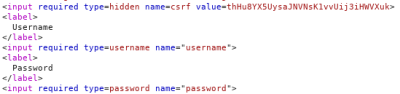

CSRF token is tied to a non-session cookie
This a variation of the vulnerability CSRF token is not tied to the user session in the chapter above
In this vulnerability the CSRF token is tied a non session cookie(in the below example the non session cookie is csrfKey)
This can occur when an application employs two different frameworks, one for session handling and one for CSRF protection, which are not integrated together.
How to Test
In this situation the attacker:
1. attacker first account: log in to the application using an account obtaining a valid token
1) After that you log in
2) Use the Proxy with “Intercept On”
3) Now send the request to repeater and check the responses
▪ Send the request to repeater and use as session Token a random(wrong) one
and from the response(follow the redirection) we can see that we the WebApp has logged out us

▪ use for the other Token a random(wrong) token
and from the response(follow the redirection) we can see from the WebApp that the CSRF token is invalid
Summing up:
◇ changing the session cookie logs you out
◇ changing the csrfKey cookie results in the CSRF token being rejected.
This suggests that the csrf token is NOT tied with the session cookie, but is tied with csrfKey cookie that is a non session cookie
It could be vulnerable! We could use the csrfKey and csrf token of one session(of the 1st account) with another session(of the 2nd token)
How to Exploit
1. attacker first account:
1) After that you log in
2) Use the Proxy with “Intercept On”
3) Take note of the tokens(we do not need the session token):
▪ csrfkey token(other token):
csrfKey=29o0XARLGUeDu3FHff3q769ovhSBytvu
▪ CSRF token:
csrf=QEi6wG1QSbdCyb63Ks65RdlJJ8vYj9le
4) Then "Drop" the request
2. Attacker second account: Open a private/incognito browser window, log in with another account
1) we need “Intercept On” and send to the Repeater:
with this the original request:
Change the values of the tokens that we have take note before and use it for this 2nd account, leaving the session token intact
- csrfKey token → 29o0XARLGUeDu3FHff3q769ovhSBytvu
- CSRF token → QEi6wG1QSbdCyb63Ks65RdlJJ8vYj9le
It Works! Means that the site is vulnerable
Generate a PoC (option 1)
From the Repeater tab
1. right click → Engagement tools → Generate CSRF PoC
2. Options → Include auto-submit script
3. Regenerate, then we have two solutions:
◇ “Copy HTML” and paste it in our attacker Server that in the LAB is called “Exploit Server”
◇ “Test in Browser”, this can be used just as a PoC for Penetration Testers
Note: if we need to edit the CSRF HTML PoC, remember to edit the same values also in the Request above it
Generate a PoC (option 2)
: site vulnerable to CRLF Injection AttackIn this scenario a search term get reflected in the cookies of the response to take advantage of this vulnerability see HERE (search term gets reflected in the Response). For more information check here for CRLF(Carriage Return Line Feed) Injection Attack:
https://www.geeksforgeeks.org/crlf-injection-attack/#:~:text=2.%20Cookie%20Injection

Bibliography:
https://portswigger.net/web-security/csrf/lab-token-tied-to-non-session-cookie